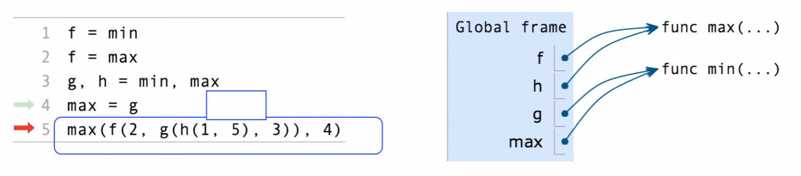
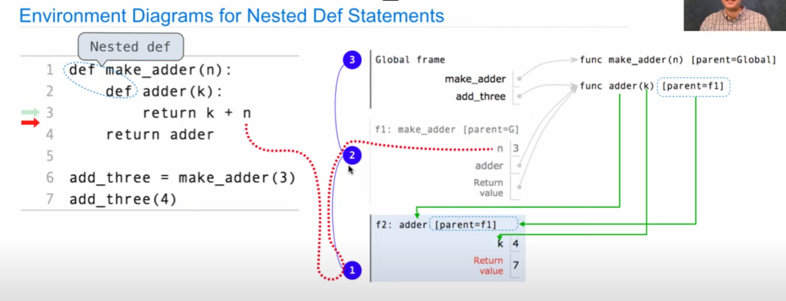
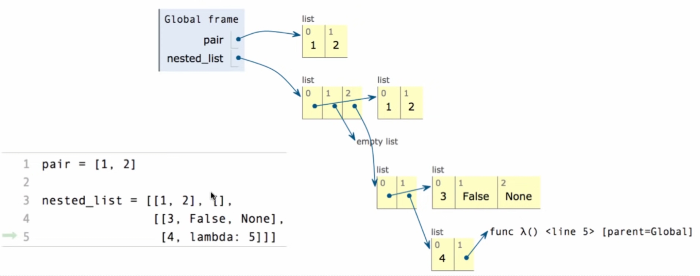

逻辑运算符
x and y 如果 x 为 False，返回 x ，否则返回 y 。
x or y 如果 x 是 True，返回 x ，否则返回 y 。
在错误信息中，最近调用的函数在最下方。
计算嵌套表达式
计算operator和operend
lambda表达式
lambda <parameters>: <return expression>
先从左到右计算所有表达式，再赋值
x = 10
y = x
x = 20
x, y = y + 1, x - 1 #x=11 y=19先在local frame中找该名字，再在global frame中找

from operator import mul
def square(square):
return mul(square, square)
square(-2)python -i ex.py //用intepreter运行
python -m doctest -v ex.pyprint(print(1), print(2)) //print的返回值是None
'''
1
2
None None
'''python支持多个返回值
docstring, doctest
from operator import floordiv, mod
def divide_exact(n, d):
"""Return the quotient and remainder of dividing N by D.
>>>q, r = divide_exact(2013, 10)
>>>q
201
>>>r
2
"""
return floordiv(n, d), mod(n, d)
quotient, remainder = divide_exact(2013, 10)
assert 2 > 3, 'That is false'环境 嵌套

当函数被定义时：
创建一个function value: func <name>(<formal parameters>) [parent=<parents>] Its parent is the current frame. Bind to the function value in the current frame
当函数被调用时：
- Add a local frame, titled with the <name> of the function being called.
- Copy the parent of the function to the local frame: [parent=<label>]
- Bind the <formal parameters> to the arguments in the local frame.
- Execute the body of the function in the environment that starts with the local frame
lambda的parent是它所在的frame
装饰器
from ucb import trace
@trace
def fib(n): def zero(f):
return lambda x: x
def successor(n):
return lambda f: lambda x: f(n(f)(x))
def one(f):
return lambda x: f(x)
def two(f):
return lambda x: f(f(x))
def church_to_int(n):
"""Convert the Church numeral n to a Python integer.
>>> church_to_int(zero)
0
>>> church_to_int(one)
1
>>> church_to_int(two)
2
>>> church_to_int(three)
3
"""
return n(lambda x: x + 1)(0)
def add_church(m, n):
"""Return the Church numeral for m + n, for Church numerals m and n.
>>> church_to_int(add_church(two, three))
5
"""
return lambda f: lambda x: n(f)(m(f)(x))
def mul_church(m, n):
"""Return the Church numeral for m * n, for Church numerals m and n.
>>> four = successor(three)
>>> church_to_int(mul_church(two, three))
6
>>> church_to_int(mul_church(three, four))
12
"""
return lambda f: m(n(f))
def pow_church(m, n):
"""Return the Church numeral m ** n, for Church numerals m and n.
>>> church_to_int(pow_church(two, three))
8
>>> church_to_int(pow_church(three, two))
9
"""
return n(m)递归
执行顺序
不重不漏的分解原问题
List
digits = [1, 8, 2, 8]
getitem(digits, 3)
>>> len(digits)
4
>>> [2, 7] + digits * 2
[2, 7, 1, 8, 2, 8, 1, 8, 2, 8]
>>> 1 in digits
True
>>> 5 not in digits
>>> not(5 in digits)
>>> [1, 8] in digits #属于关系
False
[<expression> for <element> in <sequence> if <conditional>]
[x for x in range(10) if 10 % x == 0]the negative index -i is equivalent to the positive index len(lst)-i
List slicing
To create a copy of part or all of a list, we can use list slicing. The syntax to slice a list lst is: lst[<start index>:<end index>:<step size>].
This expression evaluates to a new list containing the elements of lst:
- Starting at and including the element at
<start index>. - Up to but not including the element at
<end index>. - With
<step size>as the difference between indices of elements to include.
If the start, end, or step size are not explicitly specified, Python has default values for them. A negative step size indicates that we are stepping backwards through a list when including elements.
>>> lst[:3] # Start index defaults to 0
[6, 5, 4]
>>> lst[3:] # End index defaults to len(lst)
[3, 2, 1, 0]
>>> lst[::-1] # Make a reversed copy of the entire list
[0, 1, 2, 3, 4, 5, 6]
>>> lst[::2] # Skip every other; step size defaults to 1 otherwise
[6, 4, 2, 0]for
for element in s:
pairs = [[1, 2], [2, 2], [3, 2], [4, 4]]
for x, y in pairs:range
>>> list(range(-2, 2))
[-2, -1, 0, 1]
>>> list(range(4))
[0, 1, 2, 3]
for i in range(n):
方括号内的内容可省略
sum(iterable[, start])
sum([[1, 2],[3, 4]], [])
max(iterable[,key=func])
min(iterable[,key=func])
all(iterable)exec('curry = lambda f: lambda x: lambda y: f(x, y)')
curry(add)(3)(4)String
单引号和双引号等价
三引号可以跨行
string的元素仍然是string
Dictionary
{<key exp>:<value exp> for <name> in <iter exp> if <filter exp>}tuple
元组 不可变 用逗号分隔的
内含可变元素可变
identity is
Identity is evaluates to True if both and evaluate to the same object Equality ==
evaluates to True if both and evaluate to equal values Identical objects are always equal values
函数默认参数为mutable时 不会被类似初始化重新赋值
Some files are plain text and can be read into Python as either:
One string containing the whole contents of the file: open(‘/some/file.txt’).read()
A list of strings, each containing one line: open(‘/some/file.txt’).readlines()
Useful string methods for processing the contents of a file:
.strip() returns a string without whitespace (spaces, tabs, etc.) on the ends
.split() returns a list of strings that were separated by whitespace
.replace(a, b) returns a string with all instances of string a replaced by string b
A container can provide an iterator that provides access to its elements in order
iter(iterable): Return an iterator over the elements of an iterable value
next(iterator): Return the next element in an iterator
list(t) 所有剩余元素的list
iterator可变
可以用for遍历
map(func, iterable) 返回一个iterator
filter(func, iterable)返回下一个为真的func(x)
zip(first_iter, second_iter)
reversed(sequence)
list/tuple/sorted(iterable)
The built-in zip function returns an iterator over co-indexed tuples.
If one iterable is longer than the other, zip only iterates over matches and skips extras.
More than two iterables can be passed to zip.